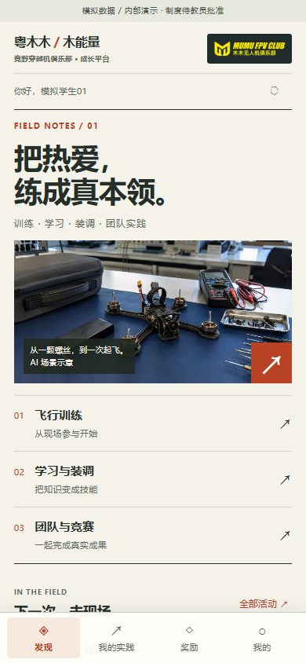

OPEN SOURCE / CAMPUS PRACTICE
把一次实践，
连接成成长。
粤木木木能量 · 校园实践与积分协同平台
这是静态演示导览。画面来自新建的本地MySQL示例库，人物、积分和库存均为虚构；本页没有数据库、登录或实际兑换服务。
查看真实画面 ↓
01 / ACTUAL SCREENS
同一流程，三种视角。
02 / VERIFIED FLOW
有依据地记录每一步。
01实践与独立审核真实界面完成活动发布、报名、起止签到、成果提交与独立人员签认；发起人自审被服务端拒绝。
02账本与幂等API使用真实MySQL事务，验证追加账本、批次溯源、重复请求、并发与回滚；成长记录和可兑换积分分开计算。
03私有边界角色菜单之外，服务端继续校验对象、组织及领取点；公开演示不包含访问口令、领取码或私有附件。
03 / RUN LOCALLY
从源码运行完整示例。
需要自己的Node.js、pnpm、MySQL和Chrome。具体版本、隔离配置与启动步骤见README；先创建新示例库，不接入原有数据库。
获取源码
git clone https://github.com/yangwei251003/yuemumu-rewards-platform.git安装与准备
pnpm install --frozen-lockfile
pnpm run setup integration
pnpm db:start
pnpm db:migrate
pnpm db:seed构建与启动
pnpm build
pnpm demo
pnpm health这份公开演示的范围
这里只浏览画面与说明，不执行积分变动或兑换。完整应用当前为APP_MODE=demo，正式身份、微信真机、云环境与实际业务授权尚未验收，制度仍是待确认草案。部分旧Taro开发工具还有未维护安全公告，具体影响与本轮检查见仓库文档。
阅读运行条件与验证记录 ↗